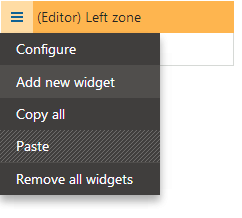

Setting up widget zones on pages
To allow users to work with widgets, you need to create widget zones on your website's pages. You can set up widget zones on:
By default, all zones on portal engine templates are static web part zones. Only the website's designers can modify the content of web part zones by adding web parts. Widget zones represent sections of the page that other types of users can customize.
To change a web part zone into a widget zone:
Warning: Changing the widget type of a zone removes all instances of web parts or widgets placed in the given zone.
Open the Pages application.
Select the page in the content tree.
Switch to the Design tab.
Open the properties dialog of the given web part zone:
Expand the zone's menu (
 ) and click Configure.
) and click Configure.
orDouble click the zone header.
Set the zone's Widget zone type property:
Zone type
Description
None
Standard web part zones.
User personalization
Allows registered users to personalize the zone's widget content on the live site.
Each user has their own unique version of the zone. The personalized content cannot be seen by other users.
Customization by page editor
Allows website editors to work with widgets:
on the Page tab of the Pages application
when editing pages in on-site editing mode
Customization by group administrator
Allows administrators of the group that owns the page to work with widgets on the live site.
Click OK.
The zone now provides an area on the page that users can customize (according to the selected zone type). You can add default widget content into the zone.
Specifying widget zone types in code
Changing the WidgetZoneType property directly in layout code does not save the changes in the database. You need to set the Widget zone type property by configuring the zone properties.
Creating default widget content for zones
You can set default content for widget zones by editing pages in the Pages application on the Design tab:
Right-click the header of the widget zone and click Add new widget in the menu.

Adding a widget to the default content of a zoneSelect a widget from the catalog. You can only choose the widgets that are allowed for the given type of widget zone.
Click Select.
Set the values of the widget's properties (some widgets may be configured to skip the property configuration dialog).
Macros and widget properties
For security reasons, the system does not resolve macro expressions added into values in the widget properties dialog.
You can pre-set macros into the default values of widget properties when editing widgets in the Widgets application on the Properties tab.
See: Creating widgets
Click OK.
The system adds the widget into the zone. Repeat the process to define any default widget content for the zone. The zone displays the default widgets on the page until users edit the content (depending on the type of the zone).
Important: The widgets that you add on the Design tab only represent the default content of the zone. Changes that you make to the default widgets do NOT affect pages where users have already modified the widget content.
Adding widget actions to pages
You can place the Widget actions web part onto pages that contain widget zones. The web part allows users to:
Add widgets
Reset all widget zones to their default content
Example of Widget actions on the Page tab
The web part only works with the type of widget zone specified in its Widget zone type property. When a user clicks the Add new widget button, the web part places the widget into the zone specified by the Widget zone ID property. Users can drag the widget into another zone if the default placement is not suitable.
Tip: When creating pages with editor widget zones, you can enable the Use main menu property of the Widget actions web part. This causes the web part to display the action buttons in the header of the main edit menu on the Page tab in the Pages application, instead of inside the page content.